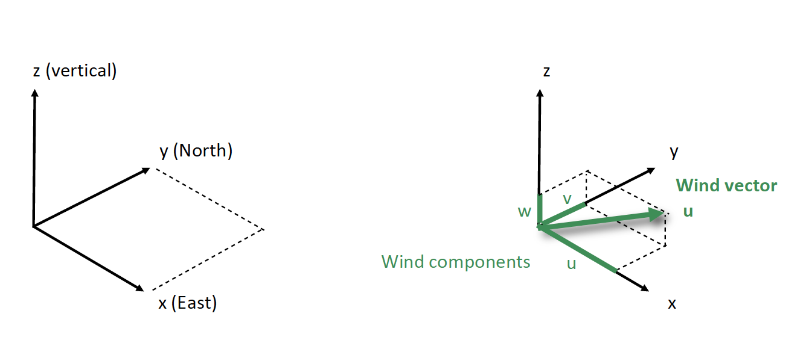
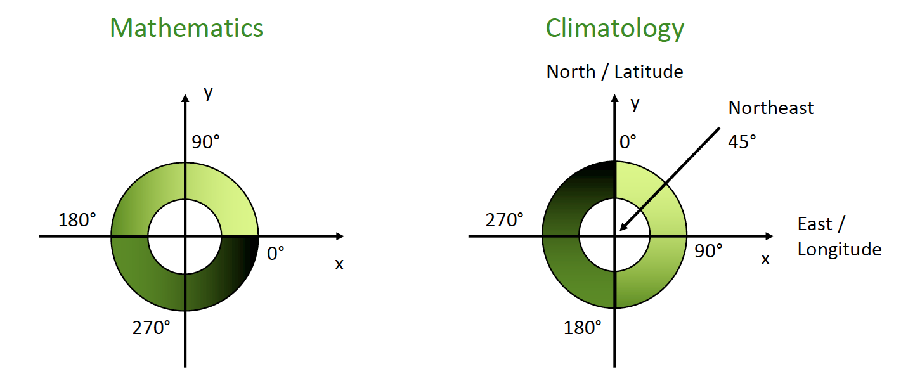

| SI base unit | Symbol | Quantity |
|---|---|---|
| Meter | m | Length |
| Kilogram | Kg | Mass |
| Second | s | Time |
| Kelvin | K | Thermodynamic Temperature |
| Ampere | A | Electric current |
| Mole | mol | Amount of a substance |
| Candela | cd | Luminous intensity |
Additional Resources
The SI System
The SI (Système International d’Unités or International System of Units) is the official unit system in science and therefore mandatory in climatology. This system uses a small number of base units from which other derived units can be obtained. The SI base units are listed in Table 1 and should be used whenever applicable in this course.
- The unit for temperature is Kelvin (K, not \(^{\circ} K\)). Temperatures may be also indicated in degree Celsius ( \(^{\circ} C\) ). However, temperature-differences should be referred to as Kelvin (K). The conversion is listed in Equation 12. Note how one Kelvin is equivalent to one degree Celsius, but the units have different zero points.
- 0 K represents absolute zero, which is the lowest possible temperature: i.e., a complete lack of energy in a system.
- Kelvin is on a ratio scale: it starts at a fixed, meaningful zero value and can only take positive values. This allows for relative comparisons between values:
- e.ge., 100 K is “twice as hot” as 50 K
- Kelvin is on a ratio scale: it starts at a fixed, meaningful zero value and can only take positive values. This allows for relative comparisons between values:
- \(^{\circ} C\) is the freezing point of fresh water at 1 atm (mean atmospheric pressure at sea level).
- Celsius is on an interval scale > it has an arbitrary zero value and can take positive or negative values. This prevents relative comparisons between values:
- e.ge., 100 \(^{\circ} C\) is not “twice as hot” as 50 \(^{\circ} C\)
- Celsius is on an interval scale > it has an arbitrary zero value and can take positive or negative values. This prevents relative comparisons between values:
- 0 K represents absolute zero, which is the lowest possible temperature: i.e., a complete lack of energy in a system.
- You can use the following equation to convert between Celsius and Kelvin:
\[ T(K) = T(\deg C) + 273.15 \tag{1}\]
Scientific Notation
Scientific notation can be used to modify SI base units and make very large/small numbers more readable by presenting them more concisely.
| Scientific notation | Prefix | Symbol |
|---|---|---|
| \(10^{12}\) | tera | T |
| \(10^{+9}\) | giga | G |
| \(10^{6}\) | mega | M |
| \(10^{3}\) | kilo | k |
| \(10^{2}\) | hecto | h |
| \(10^{0}\) | ||
| \(10^{-1}\) | deci | d |
| \(10^{-2}\) | cenit | c |
| \(10^{-3}\) | milli | m |
| \(10^{-6}\) | micro | \(\mu\) |
| \(10^{-9}\) | nano | n |
| \(10^{-12}\) | pico | p |
Wind References
- Winds are named after the direction from which the air is moving.
- Example: if the wind direction is 45 degrees, wind is from Northeast.


Important Symbols
These are list of symbols that will be used to represent key variables in the course.
| Symbol | Name | Definition |
|---|---|---|
| \(T\) | Temperature (in Kelvin unless specified otherwise) | Quantitatification of the heat present in an object |
| \(T_a\) | Air temperature | |
| \(T_s\) | Soil temperature | |
| \(RH\) | Relative Humidity | The percent of absolute humidity relative to the maximum possible humidity at that temperature |
| \(U\) | Wind speed | Velocity of air movement across (or along) a pressure gradient |
| \(P_a\) | Air pressure | Force applied perpendicular to the surface of an object |
| \(\lambda\) | Wavelength | The distance between the crest of of two waves (of elector magnetic radiation). |
| \(SW\) | Short wave radiation | Electromagnetic radiation with \(\lambda\) less than and 3 \(\mu m\). Includes ultraviolet; visible; and near-infrared radiation. |
| \(LW\) | Long wave radiation | Electromagnetic radiation with \(\lambda\) greater than 3 \(\mu m\). Includes thermal radiation (sensible heat). |
| \(R_n\) | Net Radiation | The sum of all incoming (\(\downarrow\)) and outgoing (\(\uparrow\)) radiation (both \(SW\) and \(LW\)). |
| \(a\) | Absorptivity | Radiation that is absorbed by an object; adding energy to the object and increasing its temperature. |
| \(\tau\) | Transitivity | Radiation that passes through an object. |
| \(\alpha\) | Reflectivity | Radiation that is reflected by a object. |
| \(e\) | Vapor pressure | Equation 29 |
| \(T_w\) | Wet-bulb temperature | The temperature of adiabatic saturation; read by a ventilated thermometer covered in water at ambient temperature |
| \(VDD\) | Vapor density defect | Equation 26 |
| \(VPD\) | Vapor pressure defect | Equation 28 |
| \(\rho_v\) | Vapor density | Equation 27 |
| \(T_d\) | Dew-point temperature | Table 5 |
| \(\rho^*_v(T)\) | Saturation vapor density at temperature \(T\) | Table 5 |
| \(\rho^*_{vw}(T_w)\) | Saturation vapor density at temperature \(T_w\) | Table 5 |
| \(e^*(T)\) | Saturation vapor pressure at temperature T | Maximum possible vapor pressure for a parcel of air at temperature T Table 5 |
| \(\theta\) | Solar Zenith | Angle between the sun and the vertical direction - to calculate the zenith at solar noon see Equation 19 |
| \(E_b\) | Black-body emissivity | An idealized estimate of radiative flux density based on an object’s temperature assuming its a black-body see Equation 25 |
| \(\epsilon\) | emissivity | The ratio of energy emitted from a surface to that which would be emitted by a black-body emitter at the same temperature |
| \(E_g\) | Grey-body emissivity | An adjustment to \(E_b\) which accounts for the object’s emissivity \(\epsilon\) see Equation 24 & see Equation 23 |
| \(\mu\) | Attenuation coefficient in Beers Law | the proportion of radiation that is not transmitted through a substance - not to be confused with the prefix \(\mu\) meaning micro |
Constants
| Symbol | Name | Definition |
|---|---|---|
| \(C\) | Heat capacity of air (at 20 \(^{\circ}\) C) | 1210 J m\(^{-3}\) K\(^{-1}\) |
| \(L_v\) | Latent heat of vaporization (at 20 \(^{\circ}\) C) | 2450 J g\(^{-1}\) |
| \(R\) | Ideal gas constant | 8.31446261815324 \(J K^{-1} mol^{-1} | |\)R_v$ |
| \(\gamma\) | Psychrometric constant (at 20 \(^{\circ}\) C) | 0.495 g m \(^{-3}\) K \({^-1}\) |
| \(\sigma_b\) | Stefan-Boltzman constant | 5.67 x 10\(^{-8}\) W m\(^{-2}\) K\(^{-1}\) |
| \(c\) | Speed of Light | 299792458 m s\(^{-1}\) |
| \(h\) | Planks constant | 6.62607015*10\(^{-34}\) |
| \(b\) | Wein’s displacement constant | 2898 \(\mu m K\) |
| \(I_o\) | Solar constant | 1361\(W m^{-2}\) |
| \(T (^{\circ} C)\) | \(\rho^*_v\) | \(e^*\) |
|---|---|---|
| -4 | 3.7 | 0.46 |
| -3 | 3.9 | 0.49 |
| -2 | 4.2 | 0.53 |
| -1 | 4.5 | 0.57 |
| 0 | 4.9 | 0.61 |
| 1 | 5.2 | 0.66 |
| 2 | 5.6 | 0.71 |
| 3 | 6.0 | 0.76 |
| 4 | 6.4 | 0.81 |
| 5 | 6.8 | 0.87 |
| 6 | 7.3 | 0.94 |
| 7 | 7.8 | 1.00 |
| 8 | 8.3 | 1.07 |
| 9 | 8.8 | 1.15 |
| 10 | 9.4 | 1.23 |
| 11 | 10.0 | 1.31 |
| 12 | 10.7 | 1.40 |
| 13 | 11.4 | 1.50 |
| 14 | 12.1 | 1.60 |
| 15 | 12.8 | 1.70 |
| 16 | 13.6 | 1.82 |
| 19 | 16.3 | 2.20 |
| 17 | 14.5 | 1.94 |
| 18 | 15.4 | 2.06 |
| 20 | 17.3 | 2.34 |
| 21 | 18.4 | 2.49 |
| 22 | 19.4 | 2.64 |
| 23 | 20.6 | 2.81 |
| 24 | 21.8 | 2.98 |
| 25 | 23.1 | 3.17 |
| 26 | 24.4 | 3.36 |
| 27 | 25.8 | 3.57 |
| 28 | 27.3 | 3.78 |
| 29 | 28.8 | 4.01 |
| 30 | 30.4 | 4.24 |
| 31 | 32.1 | 4.49 |
| 32 | 33.9 | 4.76 |
| 33 | 35.7 | 5.03 |
| 34 | 37.6 | 5.32 |
| 35 | 39.7 | 5.62 |
| 36 | 41.8 | 5.94 |
| 37 | 44.0 | 6.28 |
| 38 | 46.3 | 6.63 |
| 39 | 48.7 | 6.99 |
| 40 | 51.2 | 7.38 |
| 41 | 53.8 | 7.78 |
| 42 | 56.6 | 8.20 |
| 43 | 59.4 | 8.64 |
Important Equations and Helpful Conversions
A list of important equations used in the course.
- Note these are listed in no particular order
Absorption Opaque
\[ a_{\lambda} = 1 - \alpha_{\lambda} \tag{2}\]
Absorption Transparent
\[ a_{\lambda} = 1 - \alpha_{\lambda} - \tau_{\lambda} \tag{3}\]
Albedo
\[ albedo = \alpha_{SW} = \frac{\uparrow SW}{\downarrow SW} \tag{4}\]
Beers Law for Plant Canopies
\[ R_x = R_0 e^{\frac{-GL\Omega}{cos\theta}} \tag{5}\]
Beers Law
\[ R_x = R_0 e^{-kx} \tag{6}\]
Cosine Law of Illumination
\[ R_s = R_p cos(\theta) \tag{7}\]
Water Balance
\[ R_n=H+LE+G+E* \tag{8}\]
Energy of Photon
\[ e = hv \tag{9}\]
Frequency
\[ v=\frac{c}{\lambda} \tag{10}\]
Ideal Gas Law
\[ PV=nRT \tag{11}\]
Kelvin
\[ T(K) = T(\deg C) + 273.15 \tag{12}\]
Kirchhoffs Law
\[ a_lambda = \epsilon_\lambda \tag{13}\]
Net Radiation
\[ R_n = (SW \downarrow - SW \uparrow) + (LW \downarrow - LW \uparrow) \tag{14}\]
Planks Law
\[ E = \frac{2*h*c}{\lambda^{5}}*\frac{1}{e^{\frac{h*c}{\lambda*\sigma_b*T}}-1} \tag{15}\]
Radiation Balance
\[ a_\lambda + \tau_\lambda + \alpha_\lambda = 1 \tag{16}\]
Relative Humidity
\[ RH = \frac{\rho_v}{\rho^*_v(T)} \tag{17}\]
Solar Irradiance
\[ SW\downarrow = SW\downarrow_S + SW\downarrow_D \tag{18}\]
Solar Zenith at Noon
\[ \theta = Latitude - Solar\:Declination \tag{19}\]
Mean
\[ \bar{x} = \sum_{n=1}^{N} \frac{x_n}{N} \tag{20}\]
Standard Deviation
\[ \sigma = \frac{\sum_{n=1}^{N} x_n - \bar{x}}{N} \tag{21}\]
z Score Normalization
\[ z = \frac{x-\bar{x}}{\sigma} \tag{22}\]
Stefan Boltzman Law Grey Body Adjusted
\[ E_g = \epsilon\sigma_b T^4 + (1-\epsilon) * (SW\downarrow+LW\downarrow) \tag{23}\]
Stefan Boltzman Law Grey Body
\[ E_g = \epsilon\sigma_b T^4 \tag{24}\]
Stefan Boltzman Law
\[ E_b = \sigma_b T^4 \tag{25}\]
Vapor Density Deficit
\[ VDD = \rho^*_v(T) - \rho_v \tag{26}\]
Vapor Density
\[ \rho_v = \rho^*_{vw}(T_w) - \gamma(T-T_w) \tag{27}\]
Vapor Pressure Deficit
\[ VPD = e*(T) - e \tag{28}\]
Vapor Pressure
\[ e = \rho_v R_v T \tag{29}\]
Water Balance
\[ P=ET+\delta S+Q \tag{30}\]
Weins Law
\[ \lambda_{max} = \frac{b}{T} \tag{31}\]